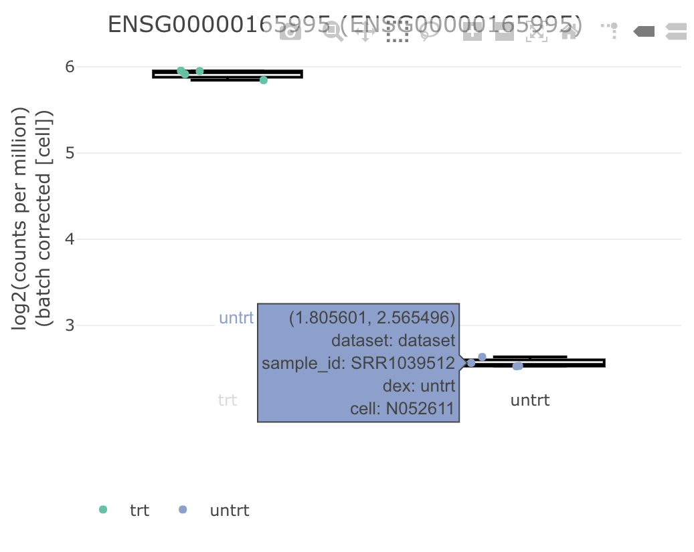

The FacileBiocData package enables the use of Bioconductor-standard data containers, like a SummarizedExperiment, DGEList, DESeqDataSet, etc. as “first-class” data-providers within the facile ecosystem.
Example Usage
The user simply needs to call the facilitate function on their data container in order to make its data available via the facile API, so that it can be analyzed within the facile framework.
library(FacileBiocData) data("airway", package = "airway") airway.facile <- facilitate(airway, assay_type = "rnaseq")
We can now use airway.facile as a first-class data-providedr within the facile framework. For instance, we can use the FacileAnalysis to perform a differential expression analysis using the edgeR or limma based framework:
library(FacileAnalysis) dge.facile <- airway.facile %>% flm_def("dex", numer = "trt", denom = "untrt", batch = "cell") %>% fdge(method = "voom")
We can extract the statistics from the fdge result:
tidy(dge.facile) %>% select(feature_id, logFC, pval, padj) %>% arrange(pval) %>% head() #> # A tibble: 6 x 4 #> feature_id logFC pval padj #> <chr> <dbl> <dbl> <dbl> #> 1 ENSG00000165995 3.28 4.29e-11 0.000000684 #> 2 ENSG00000179593 8.06 3.14e-10 0.00000152 #> 3 ENSG00000120129 2.94 5.19e-10 0.00000152 #> 4 ENSG00000152583 4.56 5.82e-10 0.00000152 #> 5 ENSG00000162493 1.88 6.18e-10 0.00000152 #> 6 ENSG00000157214 1.97 7.07e-10 0.00000152
Produce an interactive visual (via using plotly/htmlwidgets) from one of the results using viz()
viz(dge.facile, "ENSG00000165995")

Or, finally, launch a shiny gadget over the fdge() result so that we can interactively explore the differential expression result in all of its glory:
shine(dge.facile)

You can refer to the RNA-seq analysis vignette vignette in the FacileAnalysis package in order to learn how you can interactively analyze and explore RNA-seq data in the facile.bio framework.